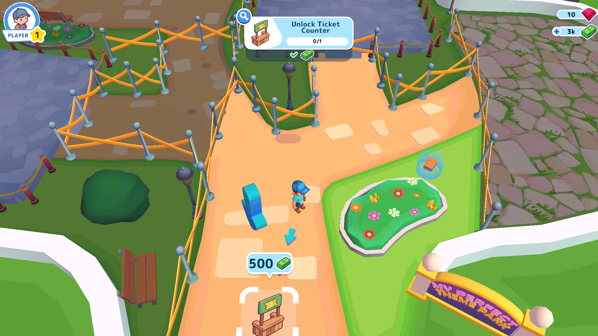
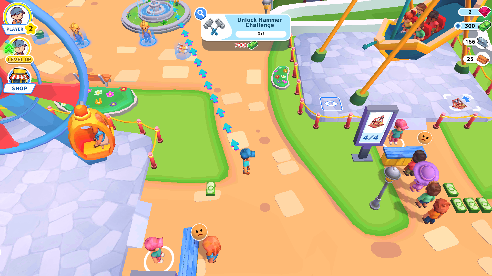
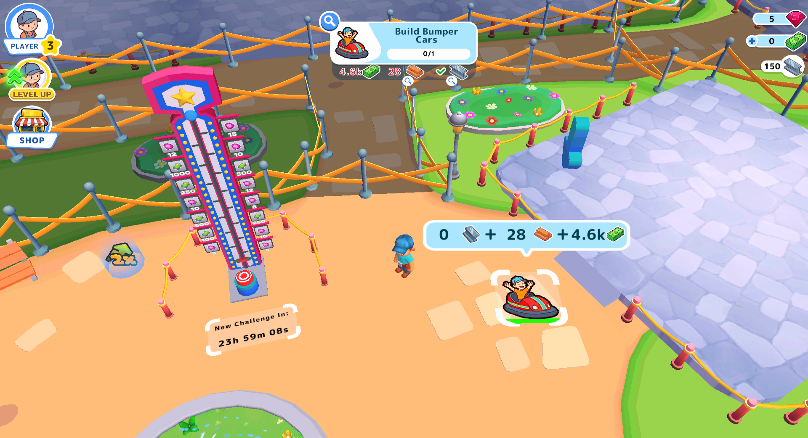
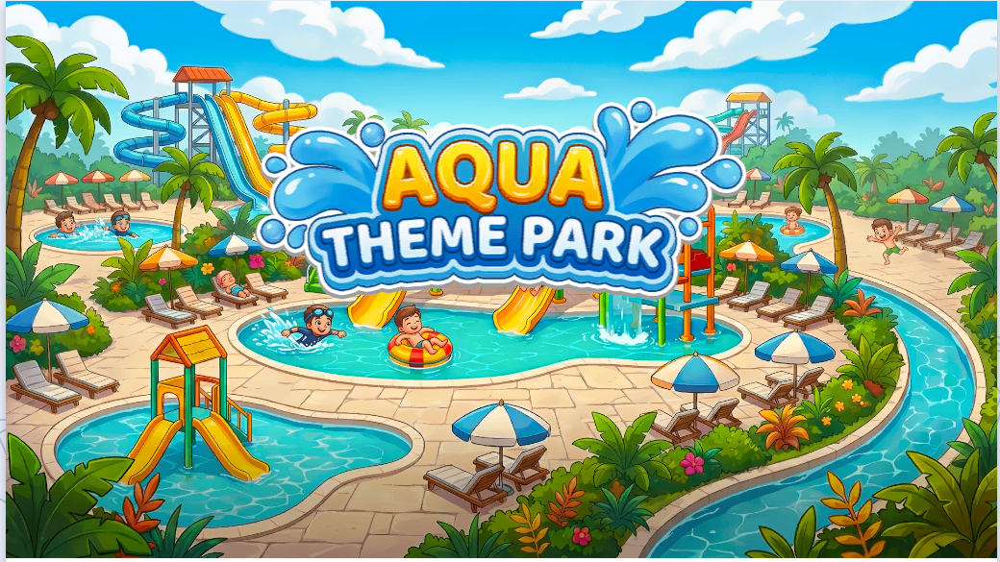
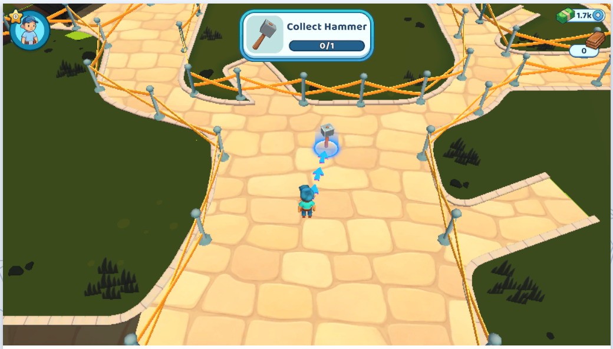
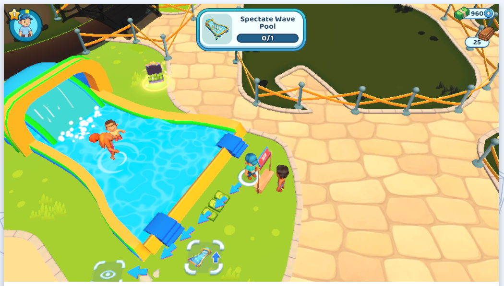
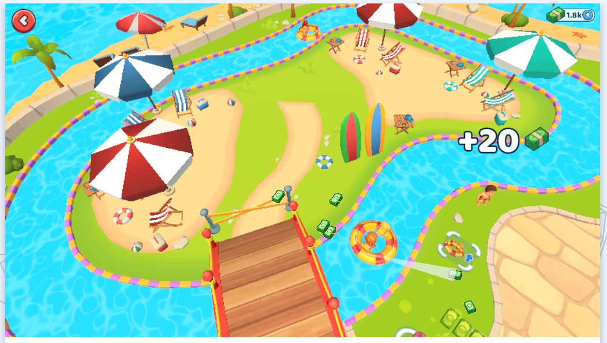
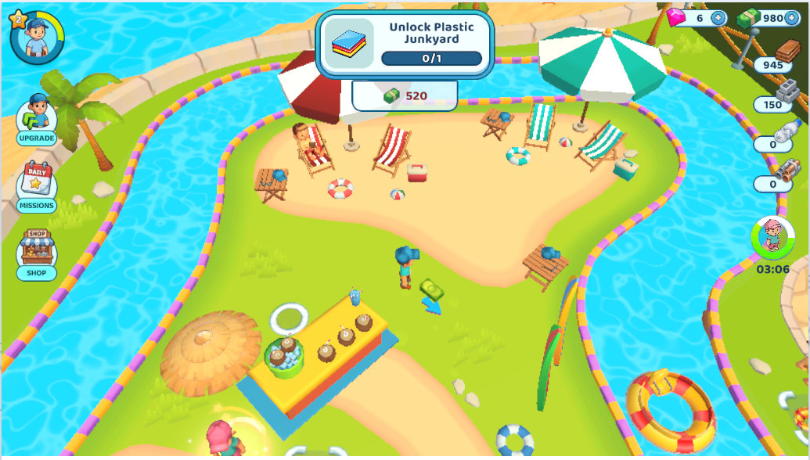
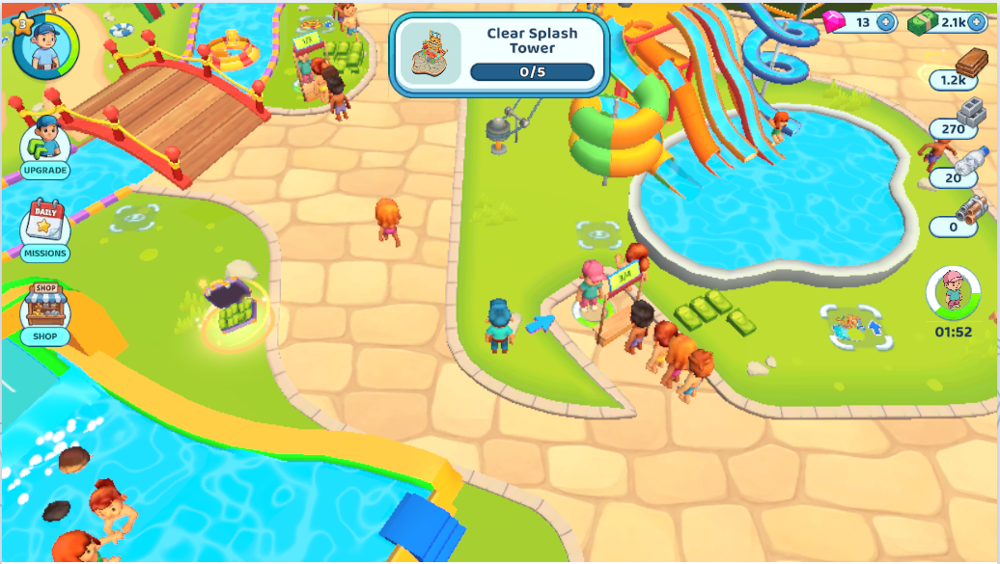

Platform, Technologies, Monetization
- Developed using Unity 6 engine for HTML5 (WebGL) platform.
- Integrated rewarded video and interstitial advertisements at meaningful points in game.
Key Features
-
Gameplay
- Idle arcade loop centered on building a theme park from scratch — collecting resources, constructing rides, and managing visitor flow..
- More areas are unlocked using resources, after constructing previous rides.
- Resource gathering from junkyards which replenish after specific times.
- Park capacity scales with unlocked areas and constructed rides.
- Rides periodically get dirty after certian cycles and player has to clean them.
- Differnt helpers for automation of different things including rides, ticket counter, resources and cleaning.
-
Cosmetic Customizations
- Different player and ride skins.
-
Progression and Engagement
- Skill upgrade path that lets players spend gems to improve a number of things.
- Task system acts as a step by step guide for players to proceed.
- Daily mission system that lets players earn cash and gems on completing them.
- VIP guests arrive periodically requiring a rewarded ad to enter; they pay 4× normal rates per ride and drop Gems while walking.
Screenshots



Water Park
A water themed game similar to this is under development, adding and removing some features from My Parfect Theme Park. Particularly, a dynamic visitor assignemnt mechanic which moves visitors waiting at the end of a queue in an old ride to move to a newly unlocked ride, also assigning any new visitors entered into the park to the new ride until it is run once.
Screenshots






×